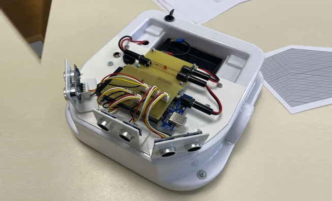
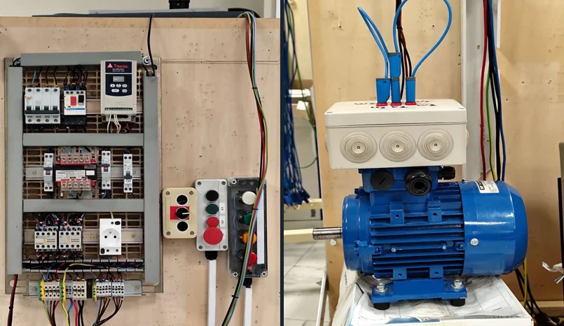
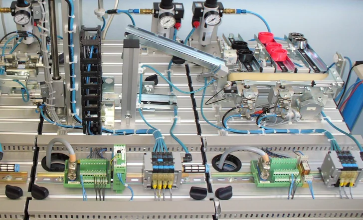
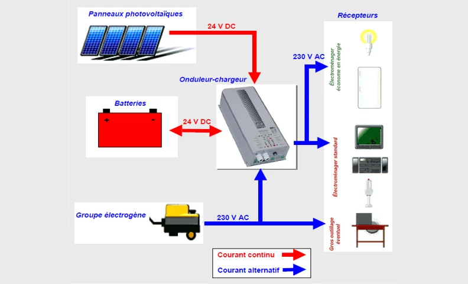
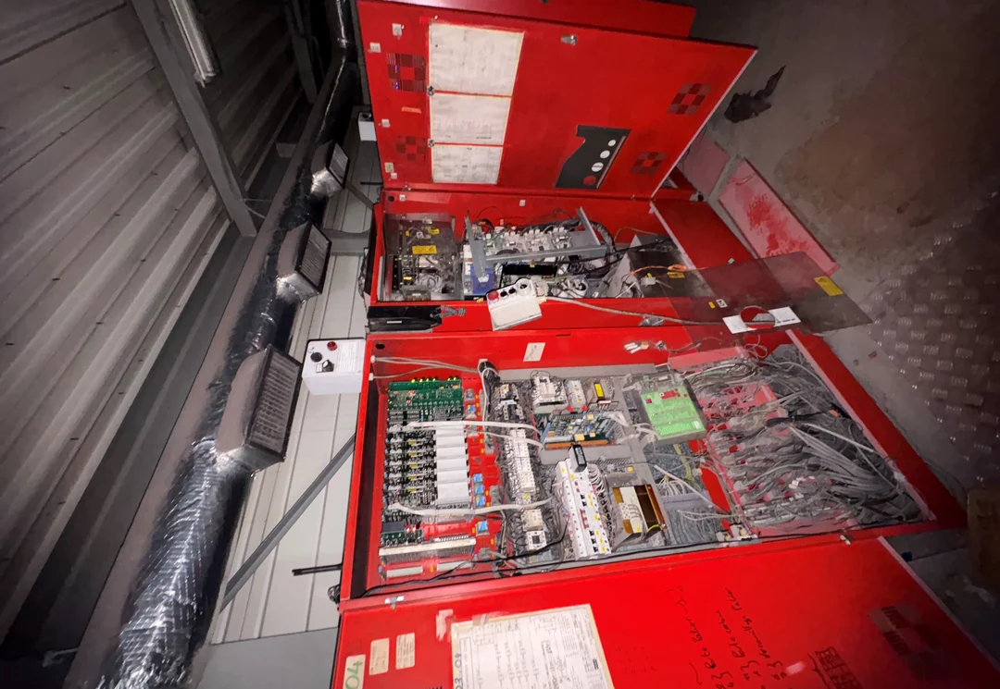

RobotiqueRobot mobile autonome
Détecter les obstacles et piloter les déplacements à partir de mesures ultrasonores.
Voir le projetPortfolio d’ingénierie
Étudiant en génie électrique et informatique industrielle, passionné par l’énergie et l’automobile.
Réalisations

RobotiqueDétecter les obstacles et piloter les déplacements à partir de mesures ultrasonores.
Voir le projet
ÉlectrotechniqueDimensionner la partie puissance et coordonner les commandes du moteur.
Voir le projet
AutomatismesDiagnostiquer et vérifier une ligne de distribution, de stockage et de tri de pièces.
Voir le projet
Énergie solaireRelier production, stockage et distribution dans une installation autonome.
Voir le projetExpérience de terrain
Technicien de maintenance stagiaire · ADS, Paris
Avril – juin 2025 · 8 semaines
Chez ADS, j’ai accompagné les équipes sur des ascenseurs et des monte-charges. Entre maintenance préventive et corrective, j’ai utilisé des outils de diagnostic, participé aux essais de sécurité et contribué aux rapports d’intervention.
Voir le stage en images
5 photosÀ propos
Ma passion pour l’automobile m’a conduit au BUT Génie électrique et informatique industrielle à l’IUT de Créteil-Vitry. J’y ai choisi le parcours Électricité et maîtrise de l’énergie pour comprendre comment produire, convertir et stocker l’électricité.
Je souhaite poursuivre en école d’ingénieurs et appliquer ces connaissances aux systèmes électriques de demain, en particulier dans le secteur automobile.
Contact
Un projet, une formation ou une opportunité en ingénierie ?